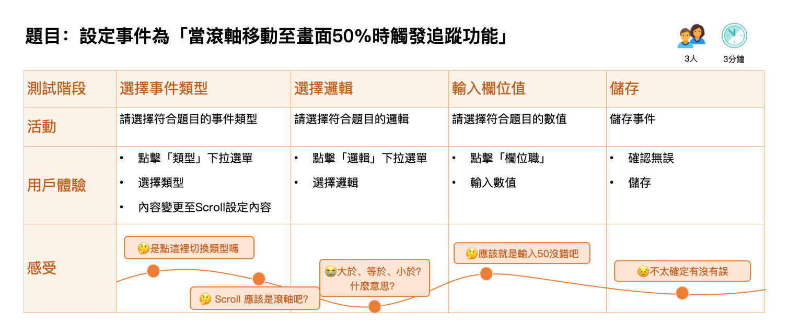
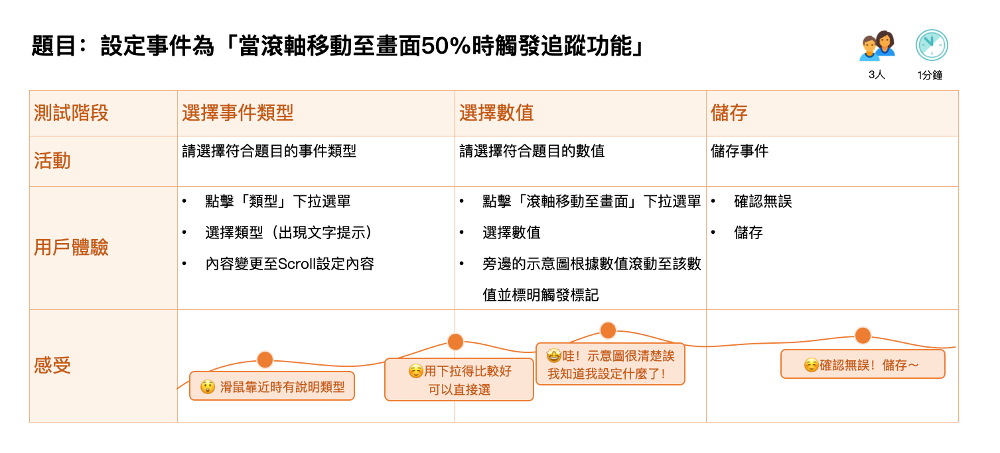

← 其他作品

讓追蹤設定不再需要行銷專業的顧客消費歷程管理平台
串接 Email、簡訊、一頁式網頁與社群平台的行銷自動化平台。我中途接手改版，先盤點第一版的問題、重新做使用者研究，把只有行銷專家才會設定的「追蹤功能」，改成一般使用者也能看懂、即時確認結果的流程。
問題情境
我訪談廣告業務、親自操作競品，並用 Prototype 做易用性測試，發現問題集中在「追蹤功能」的設定。
我請 3 位使用者試用第一版設計，完成「設定滾軸移動至畫面 50% 時觸發追蹤」，並記錄每個步驟的操作與感受：

操作過於複雜
需要具備行銷知識
才能正確設定，
一般使用者難以上手。
說明不夠直覺
只有文字描述，
無法呈現實際操作
與畫面互動。
缺乏即時回饋
設定完無法立即確認結果，
容易誤判。
需求與解法
追蹤功能改版
設定的同時，就看到結果
以「追蹤功能」的「調整參數」為主要改版範圍，提出三個方向。
修改前

修改後
設定觸發條件
事件類型Scroll
參數設定
滾軸移動至畫面
- 0%
- 10%
- 20%
- 30%
- 40%
- 50%
- 60%
- 70%
- 80%
- 90%
- 100%
示意圖
0%10%20%30%40%50%60%70%80%90%100%
觸發起始線
取消儲存
為什麼這樣設計
針對訪談發現的三個痛點，從三個方向調整「調整參數」的設定方式：
- 簡化操作流程：拿掉「邏輯」這一步，只要選擇捲動深度，降低行銷知識的門檻。
- 用互動示意取代文字：以示意圖即時呈現觸發位置，設定的同時就能理解結果。
- 數值改用下拉選單：原本逐一輸入數值瑣碎又容易打錯，改為下拉選單，減少錯誤與時間。
成果與過程
01
設計流程

- 盤點第一版
前期由另一位設計師負責，我先盤點第一版的問題，再決定改版方向。
- 訪談與競品分析
訪談公司內部的廣告業務，並親自操作競品。
- Mockup 與 Prototype
定義 UI 風格，以 Figma 繪製 Mockup、製作 Prototype。
- 改版前後易用性測試
測試改版前後的設定時間與感受，並與前端、QA 溝通規格。
02
修改後的使用者旅程
同樣請 3 位使用者完成相同任務，步驟從 4 步減為 3 步，完成時間從約 3 分鐘縮短到 1 分鐘。對照上方第一版的旅程，「選擇數值」時看到示意圖，是感受最正面的時刻。

設定時間
3→1分鐘完成追蹤設定的時間使用感受
↑使用者旅程中的正面感受明顯提升輸入錯誤
↓改用下拉選單後，輸入錯誤率降低＊改版前後各請 3 位使用者完成相同任務：設定「滾軸移動至畫面 50% 時觸發追蹤」，比較完成時間與操作感受。
反思
這是一個中途接手的改版專案，回頭看，有兩件事讓我印象最深：
- 先盤點問題，再決定改版方向。前期設計已完成，我沒有直接推翻重做，而是重新整理既有問題並進行使用者研究，確認痛點集中在「追蹤功能」後，將改版範圍聚焦於「調整參數」，在有限時程內優先解決核心問題。
- 讓使用者看見結果，比文字說明更有效。第一版以文字解釋大於、等於、小於，使用者仍難以理解；改以示意圖即時呈現觸發位置後，設定時間從約 3 分鐘縮短至 1 分鐘，讓操作與結果更直覺。
好的設定介面，不是讓使用者學會規則，而是讓他一眼看懂結果。